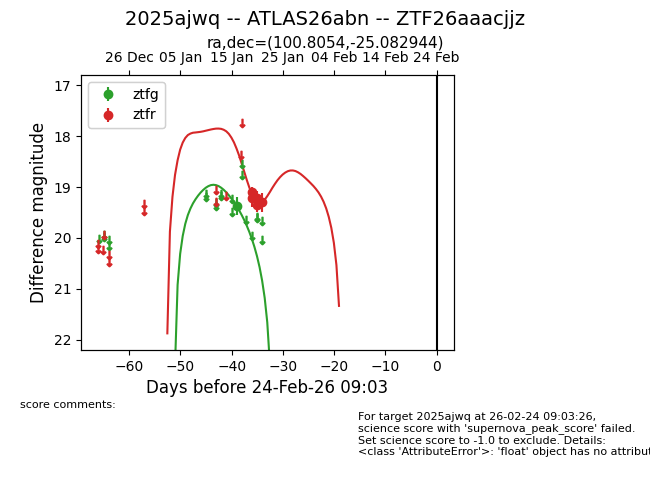
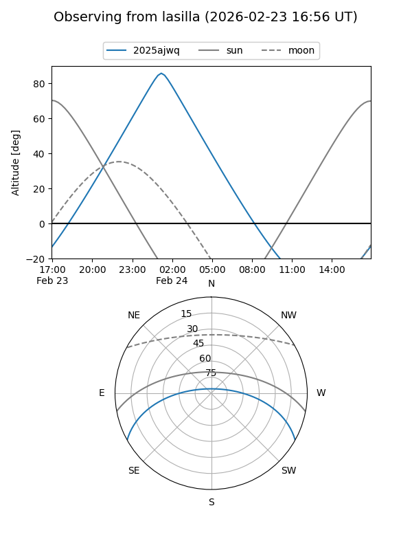
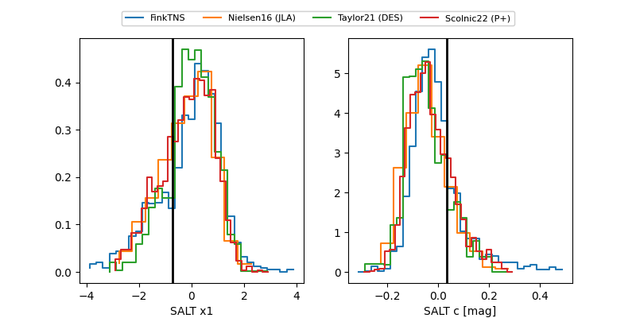

2025ajwq
Target 2025ajwq at 2026-01-19 07:00
Aliases and brokers:
FINK: link
Lasair: link
ALeRCE: link
TNS: link
YSE: link
alt names
ZTF26aaacjjz (ztf,fink_ztf)
2025ajwq (tns,yse)
ATLAS26abn (atlas)
Coordinates:
equatorial (ra, dec) = 100.8054,-25.08294
equatorial (HMS+DMS) = 06:43:13.30,-25:04:58.60
galactic (l, b) = (234.7576,-12.83805)
Flags:
Photometry:
last ztfg=19.37, ztfr=19.21
1 ztfg, 1 ztfr detections
Lightcurve

Visibility


Additional plots
